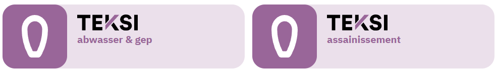

Introduction et aperçu
TWW est un ensemble d’outils et une implémentation de base de données permettant de travailler avec les données selon la structure de données pour les eaux usées et le PGEE, en abrégé VSA-DSS.
Note
La structure de données pour les réseaux d’assainissement urbains de l’Association suisse des professionnels de la protection des eaux (en allemand Verband Schweizer Abwasser- und Gewässerschutzfachleute, VSA), généralement désignée VSA-DSS, a été publiée en 1999 et constitue depuis lors la norme en vigueur pour les données relatives à la planification générale de l’évacuation des eaux (en allemand Generelle Entwässerungsplanung, GEP). En appliquant le VSA-DSS, vous êtes également conforme à la norme SIA405 Abwasser, le sous-ensemble relatif aux réseaux d’assainissement décrit dans la norme SIA405 (cahier technique 2015 / 2016) <http://www.sia.ch/de/dienstleistungen/sia-norm/geodaten/>. Plus d’informations sur la gestion des données en assainissement urbain sont disponibles sur le site du VSA <https://vsa.ch/fachbereiche-cc/siedlungsentwaesserung/generelle-entwaesserungsplanung/datenmanagement/>.
Note
L’implémentation actuelle de la base de données en PostgreSQL correspond à la version 2020.1 du modèle de données VSA-DSS, incluant l’extension pour les inspections télévisées de réseaux d’assainissement appelée VSA-KEK (2020).
Note
Nous vous recommandons d’acquérir une licence d’accès au wiki du VSA en l’achetant sur la boutique VSA <https://vsashop.ch/de/A~21_1100~1/Datenstruktur-Siedlungsentw%C3%A4sserung-VSA-DSS-Lizenz/Mitglied>. Vous obtiendrez ainsi des réponses et un accès à toutes les questions relatives au modèle, comme le modèle de données en INTERLIS, les catalogues d’objets, des descriptions et introductions complémentaires ainsi que des jeux de données de transfert, le Wegleitung Daten der Siedlungsentwässerung (guide des données de l’assainissement urbain), les informations sur les changements et mises à jour, ainsi que le droit de tester et convertir un nombre illimité de jeux de données INTERLIS pendant un an avec le VSA Checker <https://vsa.ch/fachbereiche-cc/siedlungsentwaesserung/generelle-entwaesserungsplanung/datenmanagement/#GEP-Datachecker>. Certains cantons offrent cet accès gratuitement aux bureaux d’ingénieurs et aux communes — renseignez-vous auprès de votre office de l’environnement.
Pour travailler avec les outils TWW, il est également important de connaître la norme suivante : Wegleitung Daten der Siedlungsentwässerung, qui est un guide pratique pour la modélisation de la réalité dans le modèle de données SIG et hydraulique du VSA, et en particulier ses annexes « Erfassungsrichtlinien » (directives de saisie des données) et « Erfassungsbeispiele » (exemples de saisie). Le VSA le propose sous forme de package complet sur le VSA-Wiki, qui inclut également l’accès au VSA-Checker (un outil de vérification des fichiers INTERLIS).
Ceci est important car, avec le VSA-DSS, vous ne décrivez pas seulement les regards et les canalisations (ouvrages d’assainissement en tant qu’éléments constructifs), mais vous créez également, avec les regards et les tronçons, le modèle hydraulique du réseau d’assainissement (éléments de réseau).
Il est important de connaître la différence entre ouvrages d’assainissement primaires et secondaires (pwwf / swwf). Les règles de placement des regards ne sont pas les mêmes pour les réseaux pwwf et swwf. Les bassins versants ne doivent être connectés qu’au réseau pwwf. Les tronçons sont toujours créés dans le sens d’écoulement (sens d’écoulement en régime normal).
Pour faciliter la numérisation, TWW utilise deux vues principales : vw_tww_wastewater_structure et vw_tww_reach. Pour modifier ces vues principales, un assistant spécial ainsi que les fenêtres d’attributs préconfigurées de ces vues sont disponibles. L’idée est que l’assistant facilite la numérisation, de sorte que 95 % des regards et canalisations puissent être saisis depuis l’onglet général de la fenêtre d’attributs, c’est-à-dire avec le moins de clics de souris possible.
Avant de commencer la numérisation, réfléchissez à l’obj_id des enregistrements que vous allez créer. Un enregistrement VSA-DSS doit avoir un OID composé d’un préfixe et d’un suffixe. Le suffixe est généré par la base de données TWW. Le préfixe doit être défini dans tww_sys.oid_prefixes avant de commencer la numérisation (voir le chapitre « Setup workstation » dans le « Guide d’installation TWW »).
Assistant TWW (wizard)
L’utilisation de l’assistant (Numériser les structures assainissement) est recommandée pour numériser les tronçons, car il facilite l’accrochage (snapping) et la connexion aux regards, de préférence aux tronçons. Si vous utilisez l’outil QGIS « Ajouter une entité linéaire », vous ne pouvez pas sélectionner et choisir les regards aussi facilement.